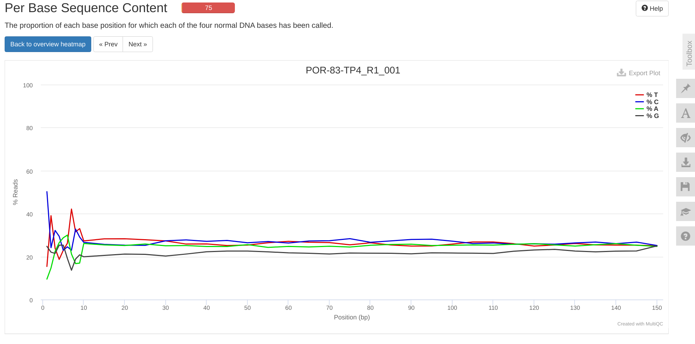
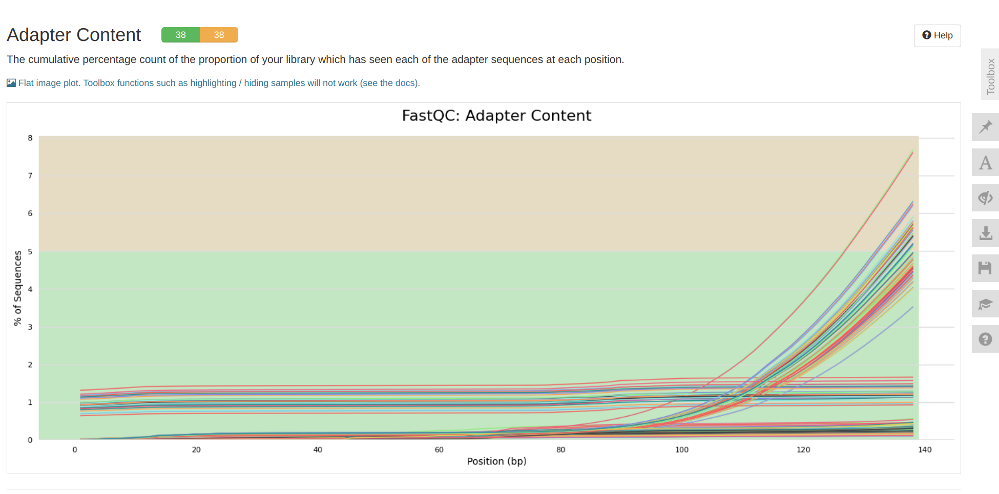

INTRO
This notebook ran FastQC and MultiQC on the P.evermanni raw RNA-seq data received 20240926 (Notebook), as part of urol-e5/timeseries_molecular (GitHub repo).
Additionally, it renames the raw FastQs as <species>-<colony_ID>-<timepoint> to allow for easier sample parsing and maintain consistency throughout the project.
The contents below are from markdown knitted from 00.00-E-Peve-RNAseq-reads-FastQC-MultiQC.md (commit 69ad137).
1 Create a Bash variables file
This allows usage of Bash variables across R Markdown chunks.
{
echo "#### Assign Variables ####"
echo ""
echo "# Data directories"
echo 'export timeseries_dir=/home/shared/8TB_HDD_01/sam/gitrepos/urol-e5/timeseries_molecular'
echo 'export output_dir_top=${timeseries_dir}/E-Peve/output/00.00-E-Peve-RNAseq-reads-FastQC-MultiQC'
echo 'export raw_reads_dir=${timeseries_dir}/E-Peve/data/rnaseq-raw-fastqs'
echo 'export raw_reads_url="https://owl.fish.washington.edu/nightingales/E5-coral-time-series/30-1047560508/"'
echo ""
echo "# Input files"
echo 'export metadata_file="${timeseries_dir}/M-multi-species/data/rna_metadata.csv"'
echo "# Paths to programs"
echo 'export fastqc=/home/shared/FastQC-0.12.1/fastqc'
echo 'export multiqc=/home/sam/programs/mambaforge/bin/multiqc'
echo ""
echo "# Set FastQ filename patterns"
echo "export fastq_pattern='*.fastq.gz'"
echo "export R1_fastq_pattern='*_R1_*.fastq.gz'"
echo "export R2_fastq_pattern='*_R2_*.fastq.gz'"
echo ""
echo "# Set number of CPUs to use"
echo 'export threads=40'
echo ""
echo "## Inititalize arrays"
echo 'export fastq_array_R1=()'
echo 'export fastq_array_R2=()'
echo 'export raw_fastqs_array=()'
echo 'export R1_names_array=()'
echo 'export R2_names_array=()'
echo ""
echo "# Programs associative array"
echo "declare -A programs_array"
echo "programs_array=("
echo '[fastqc]="${fastqc}" \'
echo '[multiqc]="${multiqc}" \'
echo ")"
echo ""
echo "# Print formatting"
echo 'export line="--------------------------------------------------------"'
echo ""
} > .bashvars
cat .bashvars#### Assign Variables ####
# Data directories
export timeseries_dir=/home/shared/8TB_HDD_01/sam/gitrepos/urol-e5/timeseries_molecular
export output_dir_top=${timeseries_dir}/E-Peve/output/00.00-E-Peve-RNAseq-reads-FastQC-MultiQC
export raw_reads_dir=${timeseries_dir}/E-Peve/data/rnaseq-raw-fastqs
export raw_reads_url="https://owl.fish.washington.edu/nightingales/E5-coral-time-series/30-1047560508/"
# Input files
export metadata_file="${timeseries_dir}/M-multi-species/data/rna_metadata.csv"
# Paths to programs
export fastqc=/home/shared/FastQC-0.12.1/fastqc
export multiqc=/home/sam/programs/mambaforge/bin/multiqc
# Set FastQ filename patterns
export fastq_pattern='*.fastq.gz'
export R1_fastq_pattern='*_R1_*.fastq.gz'
export R2_fastq_pattern='*_R2_*.fastq.gz'
# Set number of CPUs to use
export threads=40
## Inititalize arrays
export fastq_array_R1=()
export fastq_array_R2=()
export raw_fastqs_array=()
export R1_names_array=()
export R2_names_array=()
# Programs associative array
declare -A programs_array
programs_array=(
[fastqc]="${fastqc}" \
[multiqc]="${multiqc}" \
)
# Print formatting
export line="--------------------------------------------------------"2 Download P.evermanni RNA-seq FastQs
2.1 Inspect metadata file
# Load bash variables into memory
source .bashvars
head ${metadata_file} |
column -t -s","SampleNumber SampleName Plate WellNumber AzentaSampleName ColonyID Timepoint SampleType Species-Strain SampleBuffer TotalAmount-ng Volume-uL Conc-ng.uL PurificationMethod BiosafetyLevel MethodUsedForFluorescence MethodUsedForSpectrophotometry MethodUsedForElectrophoresis
1 20230123_ACR-225_TP1 1 H11 1H11 ACR-225 TP1 Total RNA Acropora pulchra DNAse/RNAse-free water 2529 90 28.1 Column clean-up (Zymo Miniprep) None Qubit NA 1.5% TAE agarose non-denaturing gel Split volume for total RNA (30-1047560508) and small RNA (30-1069297013) sequencing
2 291-20220211 1 H6 1H6 ACR-225 TP2 Total RNA Acropora pulchra DNAse/RNAse-free water 936 90 10.4 Column clean-up (Zymo Miniprep) None Qubit NA 1.5% TAE agarose non-denaturing gel Split volume for total RNA (30-1047560508) and small RNA (30-1069297013) sequencing
3 527 1 B1 1B1 ACR-225 TP3 Total RNA Acropora pulchra DNAse/RNAse-free water 1722.6 87 19.8 Column clean-up (Zymo Miniprep) None Qubit NA 1.5% TAE agarose non-denaturing gel Split volume for total RNA (30-1047560508) and small RNA (30-1069297013) sequencing
4 20230123_ACR-225_TP4 1 D3 1D3 ACR-225 TP4 Total RNA Acropora pulchra DNAse/RNAse-free water 3168 90 35.2 Column clean-up (Zymo Miniprep) None Qubit NA 1.5% TAE agarose non-denaturing gel Split volume for total RNA (30-1047560508) and small RNA (30-1069297013) sequencing
5 20230123_ACR-229_TP1 1 B5 1B5 ACR-229 TP1 Total RNA Acropora pulchra DNAse/RNAse-free water 4437 90 49.3 Column clean-up (Zymo Miniprep) None Qubit NA 1.5% TAE agarose non-denaturing gel Split volume for total RNA (30-1047560508) and small RNA (30-1069297013) sequencing
6 295 1 D6 1D6 ACR-229 TP2 Total RNA Acropora pulchra DNAse/RNAse-free water 957 87 11 Column clean-up (Zymo Miniprep) None Qubit NA 1.5% TAE agarose non-denaturing gel Split volume for total RNA (30-1047560508) and small RNA (30-1069297013) sequencing
7 531 1 H7 1H7 ACR-229 TP3 Total RNA Acropora pulchra DNAse/RNAse-free water 1522.5 87 17.5 Column clean-up (Zymo Miniprep) None Qubit NA 1.5% TAE agarose non-denaturing gel Split volume for total RNA (30-1047560508) and small RNA (30-1069297013) sequencing
8 20230123_ACR-229_TP4 1 D9 1D9 ACR-229 TP4 Total RNA Acropora pulchra DNAse/RNAse-free water 6723 90 74.7 Column clean-up (Zymo Miniprep) None Qubit NA 1.5% TAE agarose non-denaturing gel Split volume for total RNA (30-1047560508) and small RNA (30-1069297013) sequencing
9 20230123_ACR-237_TP1 1 E9 1E9 ACR-237 TP1 Total RNA Acropora pulchra DNAse/RNAse-free water 3744 90 41.6 Column clean-up (Zymo Miniprep) None Qubit NA 1.5% TAE agarose non-denaturing gel Split volume for total RNA (30-1047560508) and small RNA (30-1069297013) sequencing 2.2 Download raw RNA-seq reads
Reads are downloaded from https://owl.fish.washington.edu/nightingales/E5-coral-time-series/30-1047560508/
Since sequencing included multiple species, the code will also parse only those that are P.evermanni.
The --cut-dirs 3 command cuts the preceding directory structure (i.e. nightingales/E5-coral-time-series/30-1047560508/) so that we just end up with the reads.
# Load bash variables into memory
source .bashvars
# Make output directory if it doesn't exist
mkdir --parents ${raw_reads_dir}
# Create list of only P.evermanni sample names
# Extract the AzentaSampleName for P.evermanni samples
sample_list=$(awk -F"," '$9 == "Porites evermanni" { print $5 }' ${timeseries_dir}/M-multi-species/data/rna_metadata.csv | sort)
echo ""
echo "${line}"
echo ""
echo "Sample list:"
echo ""
echo "${sample_list}"
echo ""
echo "${line}"
echo ""
# Use printf to format each item for use in wget
# Add a wildcard to ignore the <number>-- prefix
formatted_list=$(printf "*--%s_*," ${sample_list})
# Remove the trailing comma
formatted_list="${formatted_list%,}"
# Output the final wget command
echo ""
echo "${line}"
echo ""
echo "Formatted wget accept list:"
echo ""
echo "wget --accept=\"$formatted_list\""
echo ""
echo "${line}"
echo ""
# Run wget to retrieve FastQs and MD5 files
# Note: the --no-clobber command will skip re-downloading any files that are already present in the output directory
wget \
--directory-prefix ${raw_reads_dir} \
--recursive \
--no-check-certificate \
--continue \
--cut-dirs 3 \
--no-host-directories \
--no-parent \
--quiet \
--no-clobber \
--accept=${formatted_list} ${raw_reads_url}
ls -lh "${raw_reads_dir}"--------------------------------------------------------
Sample list:
1A11
1A7
1B3
1B4
1B6
1B7
1C11
1C12
1C5
1C6
1D1
1D12
1D2
1D5
1D7
1E2
1E7
1F1
1F10
1F12
1F3
1F6
1F7
1G1
1G10
1G3
1H1
1H2
1H3
2A3
2B1
2D1
2D3
2E1
2E3
2F2
2H1
2H2
--------------------------------------------------------
--------------------------------------------------------
Formatted wget accept list:
wget --accept="*--1A11_*,*--1A7_*,*--1B3_*,*--1B4_*,*--1B6_*,*--1B7_*,*--1C11_*,*--1C12_*,*--1C5_*,*--1C6_*,*--1D1_*,*--1D12_*,*--1D2_*,*--1D5_*,*--1D7_*,*--1E2_*,*--1E7_*,*--1F1_*,*--1F10_*,*--1F12_*,*--1F3_*,*--1F6_*,*--1F7_*,*--1G1_*,*--1G10_*,*--1G3_*,*--1H1_*,*--1H2_*,*--1H3_*,*--2A3_*,*--2B1_*,*--2D1_*,*--2D3_*,*--2E1_*,*--2E3_*,*--2F2_*,*--2H1_*,*--2H2_*"
--------------------------------------------------------
total 93G
-rw-r--r-- 1 sam sam 1.4G Oct 3 08:34 100--2D1_R1_001.fastq.gz
-rw-r--r-- 1 sam sam 61 Oct 3 08:34 100--2D1_R1_001.fastq.gz.md5
-rw-r--r-- 1 sam sam 1.4G Oct 3 08:36 100--2D1_R2_001.fastq.gz
-rw-r--r-- 1 sam sam 61 Oct 3 08:36 100--2D1_R2_001.fastq.gz.md5
-rw-r--r-- 1 sam sam 1012M Oct 3 08:38 101--2E1_R1_001.fastq.gz
-rw-r--r-- 1 sam sam 61 Oct 3 08:38 101--2E1_R1_001.fastq.gz.md5
-rw-r--r-- 1 sam sam 1.1G Oct 3 08:39 101--2E1_R2_001.fastq.gz
-rw-r--r-- 1 sam sam 61 Oct 3 08:39 101--2E1_R2_001.fastq.gz.md5
-rw-r--r-- 1 sam sam 1.3G Oct 3 08:50 104--2H1_R1_001.fastq.gz
-rw-r--r-- 1 sam sam 61 Oct 3 08:50 104--2H1_R1_001.fastq.gz.md5
-rw-r--r-- 1 sam sam 1.3G Oct 3 08:52 104--2H1_R2_001.fastq.gz
-rw-r--r-- 1 sam sam 61 Oct 3 08:52 104--2H1_R2_001.fastq.gz.md5
-rw-r--r-- 1 sam sam 1.4G Oct 3 09:16 110--2F2_R1_001.fastq.gz
-rw-r--r-- 1 sam sam 61 Oct 3 09:16 110--2F2_R1_001.fastq.gz.md5
-rw-r--r-- 1 sam sam 1.4G Oct 3 09:18 110--2F2_R2_001.fastq.gz
-rw-r--r-- 1 sam sam 61 Oct 3 09:18 110--2F2_R2_001.fastq.gz.md5
-rw-r--r-- 1 sam sam 1.3G Oct 3 09:24 112--2H2_R1_001.fastq.gz
-rw-r--r-- 1 sam sam 61 Oct 3 09:24 112--2H2_R1_001.fastq.gz.md5
-rw-r--r-- 1 sam sam 1.3G Oct 3 09:26 112--2H2_R2_001.fastq.gz
-rw-r--r-- 1 sam sam 61 Oct 3 09:26 112--2H2_R2_001.fastq.gz.md5
-rw-r--r-- 1 sam sam 1.1G Oct 3 09:28 113--2A3_R1_001.fastq.gz
-rw-r--r-- 1 sam sam 61 Oct 3 09:28 113--2A3_R1_001.fastq.gz.md5
-rw-r--r-- 1 sam sam 1.1G Oct 3 09:30 113--2A3_R2_001.fastq.gz
-rw-r--r-- 1 sam sam 61 Oct 3 09:30 113--2A3_R2_001.fastq.gz.md5
-rw-r--r-- 1 sam sam 1.4G Oct 3 09:39 116--2D3_R1_001.fastq.gz
-rw-r--r-- 1 sam sam 61 Oct 3 09:39 116--2D3_R1_001.fastq.gz.md5
-rw-r--r-- 1 sam sam 1.4G Oct 3 09:41 116--2D3_R2_001.fastq.gz
-rw-r--r-- 1 sam sam 61 Oct 3 09:41 116--2D3_R2_001.fastq.gz.md5
-rw-r--r-- 1 sam sam 1.2G Oct 3 09:43 117--2E3_R1_001.fastq.gz
-rw-r--r-- 1 sam sam 61 Oct 3 09:43 117--2E3_R1_001.fastq.gz.md5
-rw-r--r-- 1 sam sam 1.3G Oct 3 09:45 117--2E3_R2_001.fastq.gz
-rw-r--r-- 1 sam sam 61 Oct 3 09:45 117--2E3_R2_001.fastq.gz.md5
-rw-r--r-- 1 sam sam 1.3G Oct 3 09:46 12--1D2_R1_001.fastq.gz
-rw-r--r-- 1 sam sam 60 Oct 3 09:46 12--1D2_R1_001.fastq.gz.md5
-rw-r--r-- 1 sam sam 1.3G Oct 3 09:48 12--1D2_R2_001.fastq.gz
-rw-r--r-- 1 sam sam 60 Oct 3 09:48 12--1D2_R2_001.fastq.gz.md5
-rw-r--r-- 1 sam sam 1.4G Oct 3 09:50 13--1E2_R1_001.fastq.gz
-rw-r--r-- 1 sam sam 60 Oct 3 09:50 13--1E2_R1_001.fastq.gz.md5
-rw-r--r-- 1 sam sam 1.4G Oct 3 09:52 13--1E2_R2_001.fastq.gz
-rw-r--r-- 1 sam sam 60 Oct 3 09:52 13--1E2_R2_001.fastq.gz.md5
-rw-r--r-- 1 sam sam 1.2G Oct 3 10:01 16--1H2_R1_001.fastq.gz
-rw-r--r-- 1 sam sam 60 Oct 3 10:01 16--1H2_R1_001.fastq.gz.md5
-rw-r--r-- 1 sam sam 1.2G Oct 3 10:02 16--1H2_R2_001.fastq.gz
-rw-r--r-- 1 sam sam 60 Oct 3 10:02 16--1H2_R2_001.fastq.gz.md5
-rw-r--r-- 1 sam sam 1.2G Oct 3 10:08 18--1B3_R1_001.fastq.gz
-rw-r--r-- 1 sam sam 60 Oct 3 10:08 18--1B3_R1_001.fastq.gz.md5
-rw-r--r-- 1 sam sam 1.2G Oct 3 10:10 18--1B3_R2_001.fastq.gz
-rw-r--r-- 1 sam sam 60 Oct 3 10:10 18--1B3_R2_001.fastq.gz.md5
-rw-r--r-- 1 sam sam 1.2G Oct 3 10:27 22--1F3_R1_001.fastq.gz
-rw-r--r-- 1 sam sam 60 Oct 3 10:27 22--1F3_R1_001.fastq.gz.md5
-rw-r--r-- 1 sam sam 1.3G Oct 3 10:29 22--1F3_R2_001.fastq.gz
-rw-r--r-- 1 sam sam 60 Oct 3 10:29 22--1F3_R2_001.fastq.gz.md5
-rw-r--r-- 1 sam sam 1.4G Oct 3 10:31 23--1G3_R1_001.fastq.gz
-rw-r--r-- 1 sam sam 60 Oct 3 10:31 23--1G3_R1_001.fastq.gz.md5
-rw-r--r-- 1 sam sam 1.5G Oct 3 10:33 23--1G3_R2_001.fastq.gz
-rw-r--r-- 1 sam sam 60 Oct 3 10:33 23--1G3_R2_001.fastq.gz.md5
-rw-r--r-- 1 sam sam 1.2G Oct 3 10:35 24--1H3_R1_001.fastq.gz
-rw-r--r-- 1 sam sam 60 Oct 3 10:35 24--1H3_R1_001.fastq.gz.md5
-rw-r--r-- 1 sam sam 1.2G Oct 3 10:36 24--1H3_R2_001.fastq.gz
-rw-r--r-- 1 sam sam 60 Oct 3 10:36 24--1H3_R2_001.fastq.gz.md5
-rw-r--r-- 1 sam sam 1.1G Oct 3 10:41 26--1B4_R1_001.fastq.gz
-rw-r--r-- 1 sam sam 60 Oct 3 10:41 26--1B4_R1_001.fastq.gz.md5
-rw-r--r-- 1 sam sam 1.1G Oct 3 10:43 26--1B4_R2_001.fastq.gz
-rw-r--r-- 1 sam sam 60 Oct 3 10:43 26--1B4_R2_001.fastq.gz.md5
-rw-r--r-- 1 sam sam 1.2G Oct 3 11:21 35--1C5_R1_001.fastq.gz
-rw-r--r-- 1 sam sam 60 Oct 3 11:21 35--1C5_R1_001.fastq.gz.md5
-rw-r--r-- 1 sam sam 1.2G Oct 3 11:23 35--1C5_R2_001.fastq.gz
-rw-r--r-- 1 sam sam 60 Oct 3 11:23 35--1C5_R2_001.fastq.gz.md5
-rw-r--r-- 1 sam sam 1.2G Oct 3 11:24 36--1D5_R1_001.fastq.gz
-rw-r--r-- 1 sam sam 60 Oct 3 11:24 36--1D5_R1_001.fastq.gz.md5
-rw-r--r-- 1 sam sam 1.2G Oct 3 11:26 36--1D5_R2_001.fastq.gz
-rw-r--r-- 1 sam sam 60 Oct 3 11:26 36--1D5_R2_001.fastq.gz.md5
-rw-r--r-- 1 sam sam 1.1G Oct 3 11:40 4--1D1_R1_001.fastq.gz
-rw-r--r-- 1 sam sam 59 Oct 3 11:40 4--1D1_R1_001.fastq.gz.md5
-rw-r--r-- 1 sam sam 1.2G Oct 3 11:41 4--1D1_R2_001.fastq.gz
-rw-r--r-- 1 sam sam 59 Oct 3 11:41 4--1D1_R2_001.fastq.gz.md5
-rw-r--r-- 1 sam sam 1.3G Oct 3 11:49 42--1B6_R1_001.fastq.gz
-rw-r--r-- 1 sam sam 60 Oct 3 11:49 42--1B6_R1_001.fastq.gz.md5
-rw-r--r-- 1 sam sam 1.3G Oct 3 11:51 42--1B6_R2_001.fastq.gz
-rw-r--r-- 1 sam sam 60 Oct 3 11:51 42--1B6_R2_001.fastq.gz.md5
-rw-r--r-- 1 sam sam 1.4G Oct 3 11:53 43--1C6_R1_001.fastq.gz
-rw-r--r-- 1 sam sam 60 Oct 3 11:53 43--1C6_R1_001.fastq.gz.md5
-rw-r--r-- 1 sam sam 1.4G Oct 3 11:55 43--1C6_R2_001.fastq.gz
-rw-r--r-- 1 sam sam 60 Oct 3 11:55 43--1C6_R2_001.fastq.gz.md5
-rw-r--r-- 1 sam sam 1.4G Oct 3 12:04 46--1F6_R1_001.fastq.gz
-rw-r--r-- 1 sam sam 60 Oct 3 12:04 46--1F6_R1_001.fastq.gz.md5
-rw-r--r-- 1 sam sam 1.4G Oct 3 12:06 46--1F6_R2_001.fastq.gz
-rw-r--r-- 1 sam sam 60 Oct 3 12:06 46--1F6_R2_001.fastq.gz.md5
-rw-r--r-- 1 sam sam 1.3G Oct 3 12:16 49--1A7_R1_001.fastq.gz
-rw-r--r-- 1 sam sam 60 Oct 3 12:16 49--1A7_R1_001.fastq.gz.md5
-rw-r--r-- 1 sam sam 1.3G Oct 3 12:18 49--1A7_R2_001.fastq.gz
-rw-r--r-- 1 sam sam 60 Oct 3 12:18 49--1A7_R2_001.fastq.gz.md5
-rw-r--r-- 1 sam sam 1.1G Oct 3 12:24 50--1B7_R1_001.fastq.gz
-rw-r--r-- 1 sam sam 60 Oct 3 12:24 50--1B7_R1_001.fastq.gz.md5
-rw-r--r-- 1 sam sam 1.1G Oct 3 12:25 50--1B7_R2_001.fastq.gz
-rw-r--r-- 1 sam sam 60 Oct 3 12:25 50--1B7_R2_001.fastq.gz.md5
-rw-r--r-- 1 sam sam 1.2G Oct 3 12:30 52--1D7_R1_001.fastq.gz
-rw-r--r-- 1 sam sam 60 Oct 3 12:30 52--1D7_R1_001.fastq.gz.md5
-rw-r--r-- 1 sam sam 1.2G Oct 3 12:32 52--1D7_R2_001.fastq.gz
-rw-r--r-- 1 sam sam 60 Oct 3 12:32 52--1D7_R2_001.fastq.gz.md5
-rw-r--r-- 1 sam sam 1.1G Oct 3 12:33 53--1E7_R1_001.fastq.gz
-rw-r--r-- 1 sam sam 60 Oct 3 12:34 53--1E7_R1_001.fastq.gz.md5
-rw-r--r-- 1 sam sam 1.1G Oct 3 12:35 53--1E7_R2_001.fastq.gz
-rw-r--r-- 1 sam sam 60 Oct 3 12:35 53--1E7_R2_001.fastq.gz.md5
-rw-r--r-- 1 sam sam 1.5G Oct 3 12:37 54--1F7_R1_001.fastq.gz
-rw-r--r-- 1 sam sam 60 Oct 3 12:37 54--1F7_R1_001.fastq.gz.md5
-rw-r--r-- 1 sam sam 1.5G Oct 3 12:39 54--1F7_R2_001.fastq.gz
-rw-r--r-- 1 sam sam 60 Oct 3 12:39 54--1F7_R2_001.fastq.gz.md5
-rw-r--r-- 1 sam sam 1.4G Oct 3 12:57 6--1F1_R1_001.fastq.gz
-rw-r--r-- 1 sam sam 59 Oct 3 12:57 6--1F1_R1_001.fastq.gz.md5
-rw-r--r-- 1 sam sam 1.4G Oct 3 12:59 6--1F1_R2_001.fastq.gz
-rw-r--r-- 1 sam sam 59 Oct 3 12:59 6--1F1_R2_001.fastq.gz.md5
-rw-r--r-- 1 sam sam 1.4G Oct 3 13:41 7--1G1_R1_001.fastq.gz
-rw-r--r-- 1 sam sam 59 Oct 3 13:41 7--1G1_R1_001.fastq.gz.md5
-rw-r--r-- 1 sam sam 1.4G Oct 3 13:43 7--1G1_R2_001.fastq.gz
-rw-r--r-- 1 sam sam 59 Oct 3 13:43 7--1G1_R2_001.fastq.gz.md5
-rw-r--r-- 1 sam sam 1.1G Oct 3 14:15 78--1F10_R1_001.fastq.gz
-rw-r--r-- 1 sam sam 61 Oct 3 14:15 78--1F10_R1_001.fastq.gz.md5
-rw-r--r-- 1 sam sam 1.1G Oct 3 14:16 78--1F10_R2_001.fastq.gz
-rw-r--r-- 1 sam sam 61 Oct 3 14:16 78--1F10_R2_001.fastq.gz.md5
-rw-r--r-- 1 sam sam 1.1G Oct 3 14:18 79--1G10_R1_001.fastq.gz
-rw-r--r-- 1 sam sam 61 Oct 3 14:18 79--1G10_R1_001.fastq.gz.md5
-rw-r--r-- 1 sam sam 1.2G Oct 3 14:19 79--1G10_R2_001.fastq.gz
-rw-r--r-- 1 sam sam 61 Oct 3 14:19 79--1G10_R2_001.fastq.gz.md5
-rw-r--r-- 1 sam sam 1.2G Oct 3 14:29 81--1A11_R1_001.fastq.gz
-rw-r--r-- 1 sam sam 61 Oct 3 14:29 81--1A11_R1_001.fastq.gz.md5
-rw-r--r-- 1 sam sam 1.3G Oct 3 14:30 81--1A11_R2_001.fastq.gz
-rw-r--r-- 1 sam sam 61 Oct 3 14:30 81--1A11_R2_001.fastq.gz.md5
-rw-r--r-- 1 sam sam 1.2G Oct 3 14:21 8--1H1_R1_001.fastq.gz
-rw-r--r-- 1 sam sam 59 Oct 3 14:21 8--1H1_R1_001.fastq.gz.md5
-rw-r--r-- 1 sam sam 1.2G Oct 3 14:23 8--1H1_R2_001.fastq.gz
-rw-r--r-- 1 sam sam 59 Oct 3 14:23 8--1H1_R2_001.fastq.gz.md5
-rw-r--r-- 1 sam sam 1.3G Oct 3 14:35 83--1C11_R1_001.fastq.gz
-rw-r--r-- 1 sam sam 61 Oct 3 14:35 83--1C11_R1_001.fastq.gz.md5
-rw-r--r-- 1 sam sam 1.3G Oct 3 14:37 83--1C11_R2_001.fastq.gz
-rw-r--r-- 1 sam sam 61 Oct 3 14:37 83--1C11_R2_001.fastq.gz.md5
-rw-r--r-- 1 sam sam 1.4G Oct 3 15:08 91--1C12_R1_001.fastq.gz
-rw-r--r-- 1 sam sam 61 Oct 3 15:08 91--1C12_R1_001.fastq.gz.md5
-rw-r--r-- 1 sam sam 1.4G Oct 3 15:10 91--1C12_R2_001.fastq.gz
-rw-r--r-- 1 sam sam 61 Oct 3 15:10 91--1C12_R2_001.fastq.gz.md5
-rw-r--r-- 1 sam sam 1.1G Oct 3 15:12 92--1D12_R1_001.fastq.gz
-rw-r--r-- 1 sam sam 61 Oct 3 15:12 92--1D12_R1_001.fastq.gz.md5
-rw-r--r-- 1 sam sam 1.2G Oct 3 15:13 92--1D12_R2_001.fastq.gz
-rw-r--r-- 1 sam sam 61 Oct 3 15:13 92--1D12_R2_001.fastq.gz.md5
-rw-r--r-- 1 sam sam 1.5G Oct 3 15:20 94--1F12_R1_001.fastq.gz
-rw-r--r-- 1 sam sam 61 Oct 3 15:20 94--1F12_R1_001.fastq.gz.md5
-rw-r--r-- 1 sam sam 1.5G Oct 3 15:22 94--1F12_R2_001.fastq.gz
-rw-r--r-- 1 sam sam 61 Oct 3 15:22 94--1F12_R2_001.fastq.gz.md5
-rw-r--r-- 1 sam sam 1.2G Oct 3 15:34 98--2B1_R1_001.fastq.gz
-rw-r--r-- 1 sam sam 60 Oct 3 15:35 98--2B1_R1_001.fastq.gz.md5
-rw-r--r-- 1 sam sam 1.2G Oct 3 15:36 98--2B1_R2_001.fastq.gz
-rw-r--r-- 1 sam sam 60 Oct 3 15:36 98--2B1_R2_001.fastq.gz.md53 Rename FastQs
# Load bash variables into memory
source .bashvars
cd "${raw_reads_dir}"
# Create an associative array to store the mapping
declare -A azenta_to_colony_timepoint
# Create a temporary file to store the mapping
temp_mapping_file=$(mktemp)
# Read the metadata file and populate the temporary file using awk
# Maps Azenta sample name to colony_id and timepoint.
awk -F, 'NR > 1 { print $5, $6 "-" $7 }' "$metadata_file" > "$temp_mapping_file"
# Read the temporary file and populate the associative array
while read -r azenta_sample_name colony_timepoint; do
azenta_to_colony_timepoint["$azenta_sample_name"]="$colony_timepoint"
done < "$temp_mapping_file"
# Remove the temporary file
rm "$temp_mapping_file"
# Print the associative array for debugging
echo "Azenta sample name to colony_id-Timepoint mapping:"
for key in "${!azenta_to_colony_timepoint[@]}"; do
echo ""
echo "$key -> ${azenta_to_colony_timepoint[$key]}"
echo ""
done
# Iterate over the FastQ files in the current directory
for fastq_file in *.fastq.gz *.md5; do
# Extract the Azenta sample name from the filename
azenta_sample_name=$(echo "$fastq_file" | sed -E 's/^[0-9]+--([A-Za-z0-9]+)_.*/\1/')
# Check if the Azenta sample name exists in the associative array
if [[ -n "${azenta_to_colony_timepoint[$azenta_sample_name]}" ]]; then
new_sample_name="${azenta_to_colony_timepoint[$azenta_sample_name]}"
new_filename=$(echo "$fastq_file" | sed -E "s/^[0-9]+--$azenta_sample_name/$new_sample_name/")
if [[ "$fastq_file" != "$new_filename" ]]; then
mv "$fastq_file" "$new_filename"
echo "Renamed $fastq_file to $new_filename"
else
echo "No renaming needed for $fastq_file"
fi
# If the file is a .md5 file, update its contents
if [[ "$fastq_file" == *.md5 ]]; then
sed -i -E "s|(\./)[0-9]+--$azenta_sample_name|\1$new_sample_name|" "$new_filename"
echo "Updated contents of $new_filename"
echo ""
fi
else
echo "Azenta sample name '$azenta_sample_name' not found in metadata."
# Debugging: Print all keys in the associative array with quotes
echo "Available keys in the associative array:"
for key in "${!azenta_to_colony_timepoint[@]}"; do
echo "'$key'"
done
fi
doneAzenta sample name to colony_id-Timepoint mapping:
1B3 -> POR-83-TP3
1B2 -> ACR-173-TP3
1B1 -> ACR-225-TP3
1B7 -> POR-245-TP2
1B6 -> POR-260-TP4
1B5 -> ACR-229-TP1
1B4 -> POR-72-TP1
1B9 -> ACR-265-TP4
1B8 -> POC-201-TP1
1D5 -> POR-260-TP1
1C1 -> POC-57-TP2
1D4 -> ACR-237-TP4
1D7 -> POR-74-TP1
1C2 -> POC-222-TP4
1C3 -> POC-222-TP3
1D6 -> ACR-229-TP2
1D1 -> POR-245-TP4
1B12 -> POC-222-TP2
1C4 -> ACR-139-TP4
1C5 -> POR-73-TP3
1C6 -> POR-262-TP2
1B10 -> ACR-150-TP4
1D3 -> ACR-225-TP4
1D2 -> POR-245-TP1
1C7 -> POC-52-TP4
1B11 -> POC-40-TP1
1C8 -> POC-42-TP1
1C9 -> POC-222-TP1
2C3 -> POC-57-TP1
1D9 -> ACR-229-TP4
2C2 -> ACR-139-TP1
1D8 -> ACR-237-TP2
2C1 -> ACR-244-TP1
1E2 -> POR-69-TP3
1E3 -> ACR-150-TP2
1E1 -> ACR-265-TP3
1E6 -> POC-40-TP3
1E7 -> POR-69-TP4
1E4 -> POC-259-TP2
1E5 -> ACR-139-TP3
1E11 -> POC-219-TP1
1E10 -> POC-40-TP2
1E8 -> POC-42-TP3
1E12 -> POC-255-TP4
1E9 -> ACR-237-TP1
2B1 -> POR-72-TP2
2B2 -> ACR-145-TP1
2B3 -> ACR-139-TP2
2E1 -> POR-216-TP3
2E3 -> POR-236-TP2
2E2 -> ACR-186-TP1
1H1 -> POR-245-TP3
1H3 -> POR-83-TP1
1H2 -> POR-73-TP4
1H5 -> POC-201-TP3
2D2 -> ACR-150-TP1
2D3 -> POR-262-TP3
1H4 -> POC-42-TP2
1F9 -> POC-52-TP2
1H7 -> ACR-229-TP3
2D1 -> POR-236-TP1
1F8 -> ACR-145-TP3
1H6 -> ACR-225-TP2
1F7 -> POR-83-TP4
1H9 -> POC-53-TP4
1F6 -> POR-69-TP1
1H8 -> ACR-186-TP4
1F5 -> POC-40-TP4
1F4 -> ACR-150-TP3
1F3 -> POR-83-TP2
1D10 -> ACR-265-TP2
1F2 -> POC-259-TP4
1D11 -> POC-255-TP3
1F1 -> POR-73-TP2
1D12 -> POR-260-TP2
2G2 -> POC-57-TP4
2G1 -> ACR-145-TP2
1G8 -> POC-259-TP3
1G9 -> POC-259-TP1
1G12 -> POC-219-TP4
1G11 -> POC-53-TP1
1G10 -> POR-74-TP2
1G4 -> POC-57-TP3
1G5 -> ACR-244-TP3
1G6 -> POC-53-TP2
1G7 -> POC-42-TP4
1G1 -> POR-262-TP1
1G2 -> POC-219-TP3
1G3 -> POR-74-TP3
2F1 -> ACR-265-TP1
2F2 -> POR-216-TP4
1A11 -> POR-216-TP2
2A1 -> POC-219-TP2
1A10 -> ACR-145-TP4
2A3 -> POR-262-TP4
2A2 -> POC-255-TP2
1A12 -> ACR-237-TP3
2H2 -> POR-216-TP1
2H1 -> POR-69-TP2
1A6 -> POC-52-TP3
1H10 -> POC-201-TP2
1A7 -> POR-73-TP1
1C12 -> POR-72-TP3
1H11 -> ACR-225-TP1
1C11 -> POR-74-TP4
1A4 -> POC-52-TP1
1H12 -> ACR-186-TP3
1A5 -> POC-53-TP3
1C10 -> ACR-173-TP4
1A2 -> ACR-244-TP4
1A3 -> POC-255-TP1
1A1 -> ACR-173-TP1
1F12 -> POR-72-TP4
1F10 -> POR-260-TP3
1F11 -> ACR-173-TP2
1A8 -> ACR-186-TP2
1A9 -> ACR-244-TP2
Renamed 100--2D1_R1_001.fastq.gz to POR-236-TP1_R1_001.fastq.gz
Renamed 100--2D1_R2_001.fastq.gz to POR-236-TP1_R2_001.fastq.gz
Renamed 101--2E1_R1_001.fastq.gz to POR-216-TP3_R1_001.fastq.gz
Renamed 101--2E1_R2_001.fastq.gz to POR-216-TP3_R2_001.fastq.gz
Renamed 104--2H1_R1_001.fastq.gz to POR-69-TP2_R1_001.fastq.gz
Renamed 104--2H1_R2_001.fastq.gz to POR-69-TP2_R2_001.fastq.gz
Renamed 110--2F2_R1_001.fastq.gz to POR-216-TP4_R1_001.fastq.gz
Renamed 110--2F2_R2_001.fastq.gz to POR-216-TP4_R2_001.fastq.gz
Renamed 112--2H2_R1_001.fastq.gz to POR-216-TP1_R1_001.fastq.gz
Renamed 112--2H2_R2_001.fastq.gz to POR-216-TP1_R2_001.fastq.gz
Renamed 113--2A3_R1_001.fastq.gz to POR-262-TP4_R1_001.fastq.gz
Renamed 113--2A3_R2_001.fastq.gz to POR-262-TP4_R2_001.fastq.gz
Renamed 116--2D3_R1_001.fastq.gz to POR-262-TP3_R1_001.fastq.gz
Renamed 116--2D3_R2_001.fastq.gz to POR-262-TP3_R2_001.fastq.gz
Renamed 117--2E3_R1_001.fastq.gz to POR-236-TP2_R1_001.fastq.gz
Renamed 117--2E3_R2_001.fastq.gz to POR-236-TP2_R2_001.fastq.gz
Renamed 12--1D2_R1_001.fastq.gz to POR-245-TP1_R1_001.fastq.gz
Renamed 12--1D2_R2_001.fastq.gz to POR-245-TP1_R2_001.fastq.gz
Renamed 13--1E2_R1_001.fastq.gz to POR-69-TP3_R1_001.fastq.gz
Renamed 13--1E2_R2_001.fastq.gz to POR-69-TP3_R2_001.fastq.gz
Renamed 16--1H2_R1_001.fastq.gz to POR-73-TP4_R1_001.fastq.gz
Renamed 16--1H2_R2_001.fastq.gz to POR-73-TP4_R2_001.fastq.gz
Renamed 18--1B3_R1_001.fastq.gz to POR-83-TP3_R1_001.fastq.gz
Renamed 18--1B3_R2_001.fastq.gz to POR-83-TP3_R2_001.fastq.gz
Renamed 22--1F3_R1_001.fastq.gz to POR-83-TP2_R1_001.fastq.gz
Renamed 22--1F3_R2_001.fastq.gz to POR-83-TP2_R2_001.fastq.gz
Renamed 23--1G3_R1_001.fastq.gz to POR-74-TP3_R1_001.fastq.gz
Renamed 23--1G3_R2_001.fastq.gz to POR-74-TP3_R2_001.fastq.gz
Renamed 24--1H3_R1_001.fastq.gz to POR-83-TP1_R1_001.fastq.gz
Renamed 24--1H3_R2_001.fastq.gz to POR-83-TP1_R2_001.fastq.gz
Renamed 26--1B4_R1_001.fastq.gz to POR-72-TP1_R1_001.fastq.gz
Renamed 26--1B4_R2_001.fastq.gz to POR-72-TP1_R2_001.fastq.gz
Renamed 35--1C5_R1_001.fastq.gz to POR-73-TP3_R1_001.fastq.gz
Renamed 35--1C5_R2_001.fastq.gz to POR-73-TP3_R2_001.fastq.gz
Renamed 36--1D5_R1_001.fastq.gz to POR-260-TP1_R1_001.fastq.gz
Renamed 36--1D5_R2_001.fastq.gz to POR-260-TP1_R2_001.fastq.gz
Renamed 4--1D1_R1_001.fastq.gz to POR-245-TP4_R1_001.fastq.gz
Renamed 4--1D1_R2_001.fastq.gz to POR-245-TP4_R2_001.fastq.gz
Renamed 42--1B6_R1_001.fastq.gz to POR-260-TP4_R1_001.fastq.gz
Renamed 42--1B6_R2_001.fastq.gz to POR-260-TP4_R2_001.fastq.gz
Renamed 43--1C6_R1_001.fastq.gz to POR-262-TP2_R1_001.fastq.gz
Renamed 43--1C6_R2_001.fastq.gz to POR-262-TP2_R2_001.fastq.gz
Renamed 46--1F6_R1_001.fastq.gz to POR-69-TP1_R1_001.fastq.gz
Renamed 46--1F6_R2_001.fastq.gz to POR-69-TP1_R2_001.fastq.gz
Renamed 49--1A7_R1_001.fastq.gz to POR-73-TP1_R1_001.fastq.gz
Renamed 49--1A7_R2_001.fastq.gz to POR-73-TP1_R2_001.fastq.gz
Renamed 50--1B7_R1_001.fastq.gz to POR-245-TP2_R1_001.fastq.gz
Renamed 50--1B7_R2_001.fastq.gz to POR-245-TP2_R2_001.fastq.gz
Renamed 52--1D7_R1_001.fastq.gz to POR-74-TP1_R1_001.fastq.gz
Renamed 52--1D7_R2_001.fastq.gz to POR-74-TP1_R2_001.fastq.gz
Renamed 53--1E7_R1_001.fastq.gz to POR-69-TP4_R1_001.fastq.gz
Renamed 53--1E7_R2_001.fastq.gz to POR-69-TP4_R2_001.fastq.gz
Renamed 54--1F7_R1_001.fastq.gz to POR-83-TP4_R1_001.fastq.gz
Renamed 54--1F7_R2_001.fastq.gz to POR-83-TP4_R2_001.fastq.gz
Renamed 6--1F1_R1_001.fastq.gz to POR-73-TP2_R1_001.fastq.gz
Renamed 6--1F1_R2_001.fastq.gz to POR-73-TP2_R2_001.fastq.gz
Renamed 7--1G1_R1_001.fastq.gz to POR-262-TP1_R1_001.fastq.gz
Renamed 7--1G1_R2_001.fastq.gz to POR-262-TP1_R2_001.fastq.gz
Renamed 78--1F10_R1_001.fastq.gz to POR-260-TP3_R1_001.fastq.gz
Renamed 78--1F10_R2_001.fastq.gz to POR-260-TP3_R2_001.fastq.gz
Renamed 79--1G10_R1_001.fastq.gz to POR-74-TP2_R1_001.fastq.gz
Renamed 79--1G10_R2_001.fastq.gz to POR-74-TP2_R2_001.fastq.gz
Renamed 81--1A11_R1_001.fastq.gz to POR-216-TP2_R1_001.fastq.gz
Renamed 81--1A11_R2_001.fastq.gz to POR-216-TP2_R2_001.fastq.gz
Renamed 8--1H1_R1_001.fastq.gz to POR-245-TP3_R1_001.fastq.gz
Renamed 8--1H1_R2_001.fastq.gz to POR-245-TP3_R2_001.fastq.gz
Renamed 83--1C11_R1_001.fastq.gz to POR-74-TP4_R1_001.fastq.gz
Renamed 83--1C11_R2_001.fastq.gz to POR-74-TP4_R2_001.fastq.gz
Renamed 91--1C12_R1_001.fastq.gz to POR-72-TP3_R1_001.fastq.gz
Renamed 91--1C12_R2_001.fastq.gz to POR-72-TP3_R2_001.fastq.gz
Renamed 92--1D12_R1_001.fastq.gz to POR-260-TP2_R1_001.fastq.gz
Renamed 92--1D12_R2_001.fastq.gz to POR-260-TP2_R2_001.fastq.gz
Renamed 94--1F12_R1_001.fastq.gz to POR-72-TP4_R1_001.fastq.gz
Renamed 94--1F12_R2_001.fastq.gz to POR-72-TP4_R2_001.fastq.gz
Renamed 98--2B1_R1_001.fastq.gz to POR-72-TP2_R1_001.fastq.gz
Renamed 98--2B1_R2_001.fastq.gz to POR-72-TP2_R2_001.fastq.gz
Renamed 100--2D1_R1_001.fastq.gz.md5 to POR-236-TP1_R1_001.fastq.gz.md5
Updated contents of POR-236-TP1_R1_001.fastq.gz.md5
Renamed 100--2D1_R2_001.fastq.gz.md5 to POR-236-TP1_R2_001.fastq.gz.md5
Updated contents of POR-236-TP1_R2_001.fastq.gz.md5
Renamed 101--2E1_R1_001.fastq.gz.md5 to POR-216-TP3_R1_001.fastq.gz.md5
Updated contents of POR-216-TP3_R1_001.fastq.gz.md5
Renamed 101--2E1_R2_001.fastq.gz.md5 to POR-216-TP3_R2_001.fastq.gz.md5
Updated contents of POR-216-TP3_R2_001.fastq.gz.md5
Renamed 104--2H1_R1_001.fastq.gz.md5 to POR-69-TP2_R1_001.fastq.gz.md5
Updated contents of POR-69-TP2_R1_001.fastq.gz.md5
Renamed 104--2H1_R2_001.fastq.gz.md5 to POR-69-TP2_R2_001.fastq.gz.md5
Updated contents of POR-69-TP2_R2_001.fastq.gz.md5
Renamed 110--2F2_R1_001.fastq.gz.md5 to POR-216-TP4_R1_001.fastq.gz.md5
Updated contents of POR-216-TP4_R1_001.fastq.gz.md5
Renamed 110--2F2_R2_001.fastq.gz.md5 to POR-216-TP4_R2_001.fastq.gz.md5
Updated contents of POR-216-TP4_R2_001.fastq.gz.md5
Renamed 112--2H2_R1_001.fastq.gz.md5 to POR-216-TP1_R1_001.fastq.gz.md5
Updated contents of POR-216-TP1_R1_001.fastq.gz.md5
Renamed 112--2H2_R2_001.fastq.gz.md5 to POR-216-TP1_R2_001.fastq.gz.md5
Updated contents of POR-216-TP1_R2_001.fastq.gz.md5
Renamed 113--2A3_R1_001.fastq.gz.md5 to POR-262-TP4_R1_001.fastq.gz.md5
Updated contents of POR-262-TP4_R1_001.fastq.gz.md5
Renamed 113--2A3_R2_001.fastq.gz.md5 to POR-262-TP4_R2_001.fastq.gz.md5
Updated contents of POR-262-TP4_R2_001.fastq.gz.md5
Renamed 116--2D3_R1_001.fastq.gz.md5 to POR-262-TP3_R1_001.fastq.gz.md5
Updated contents of POR-262-TP3_R1_001.fastq.gz.md5
Renamed 116--2D3_R2_001.fastq.gz.md5 to POR-262-TP3_R2_001.fastq.gz.md5
Updated contents of POR-262-TP3_R2_001.fastq.gz.md5
Renamed 117--2E3_R1_001.fastq.gz.md5 to POR-236-TP2_R1_001.fastq.gz.md5
Updated contents of POR-236-TP2_R1_001.fastq.gz.md5
Renamed 117--2E3_R2_001.fastq.gz.md5 to POR-236-TP2_R2_001.fastq.gz.md5
Updated contents of POR-236-TP2_R2_001.fastq.gz.md5
Renamed 12--1D2_R1_001.fastq.gz.md5 to POR-245-TP1_R1_001.fastq.gz.md5
Updated contents of POR-245-TP1_R1_001.fastq.gz.md5
Renamed 12--1D2_R2_001.fastq.gz.md5 to POR-245-TP1_R2_001.fastq.gz.md5
Updated contents of POR-245-TP1_R2_001.fastq.gz.md5
Renamed 13--1E2_R1_001.fastq.gz.md5 to POR-69-TP3_R1_001.fastq.gz.md5
Updated contents of POR-69-TP3_R1_001.fastq.gz.md5
Renamed 13--1E2_R2_001.fastq.gz.md5 to POR-69-TP3_R2_001.fastq.gz.md5
Updated contents of POR-69-TP3_R2_001.fastq.gz.md5
Renamed 16--1H2_R1_001.fastq.gz.md5 to POR-73-TP4_R1_001.fastq.gz.md5
Updated contents of POR-73-TP4_R1_001.fastq.gz.md5
Renamed 16--1H2_R2_001.fastq.gz.md5 to POR-73-TP4_R2_001.fastq.gz.md5
Updated contents of POR-73-TP4_R2_001.fastq.gz.md5
Renamed 18--1B3_R1_001.fastq.gz.md5 to POR-83-TP3_R1_001.fastq.gz.md5
Updated contents of POR-83-TP3_R1_001.fastq.gz.md5
Renamed 18--1B3_R2_001.fastq.gz.md5 to POR-83-TP3_R2_001.fastq.gz.md5
Updated contents of POR-83-TP3_R2_001.fastq.gz.md5
Renamed 22--1F3_R1_001.fastq.gz.md5 to POR-83-TP2_R1_001.fastq.gz.md5
Updated contents of POR-83-TP2_R1_001.fastq.gz.md5
Renamed 22--1F3_R2_001.fastq.gz.md5 to POR-83-TP2_R2_001.fastq.gz.md5
Updated contents of POR-83-TP2_R2_001.fastq.gz.md5
Renamed 23--1G3_R1_001.fastq.gz.md5 to POR-74-TP3_R1_001.fastq.gz.md5
Updated contents of POR-74-TP3_R1_001.fastq.gz.md5
Renamed 23--1G3_R2_001.fastq.gz.md5 to POR-74-TP3_R2_001.fastq.gz.md5
Updated contents of POR-74-TP3_R2_001.fastq.gz.md5
Renamed 24--1H3_R1_001.fastq.gz.md5 to POR-83-TP1_R1_001.fastq.gz.md5
Updated contents of POR-83-TP1_R1_001.fastq.gz.md5
Renamed 24--1H3_R2_001.fastq.gz.md5 to POR-83-TP1_R2_001.fastq.gz.md5
Updated contents of POR-83-TP1_R2_001.fastq.gz.md5
Renamed 26--1B4_R1_001.fastq.gz.md5 to POR-72-TP1_R1_001.fastq.gz.md5
Updated contents of POR-72-TP1_R1_001.fastq.gz.md5
Renamed 26--1B4_R2_001.fastq.gz.md5 to POR-72-TP1_R2_001.fastq.gz.md5
Updated contents of POR-72-TP1_R2_001.fastq.gz.md5
Renamed 35--1C5_R1_001.fastq.gz.md5 to POR-73-TP3_R1_001.fastq.gz.md5
Updated contents of POR-73-TP3_R1_001.fastq.gz.md5
Renamed 35--1C5_R2_001.fastq.gz.md5 to POR-73-TP3_R2_001.fastq.gz.md5
Updated contents of POR-73-TP3_R2_001.fastq.gz.md5
Renamed 36--1D5_R1_001.fastq.gz.md5 to POR-260-TP1_R1_001.fastq.gz.md5
Updated contents of POR-260-TP1_R1_001.fastq.gz.md5
Renamed 36--1D5_R2_001.fastq.gz.md5 to POR-260-TP1_R2_001.fastq.gz.md5
Updated contents of POR-260-TP1_R2_001.fastq.gz.md5
Renamed 4--1D1_R1_001.fastq.gz.md5 to POR-245-TP4_R1_001.fastq.gz.md5
Updated contents of POR-245-TP4_R1_001.fastq.gz.md5
Renamed 4--1D1_R2_001.fastq.gz.md5 to POR-245-TP4_R2_001.fastq.gz.md5
Updated contents of POR-245-TP4_R2_001.fastq.gz.md5
Renamed 42--1B6_R1_001.fastq.gz.md5 to POR-260-TP4_R1_001.fastq.gz.md5
Updated contents of POR-260-TP4_R1_001.fastq.gz.md5
Renamed 42--1B6_R2_001.fastq.gz.md5 to POR-260-TP4_R2_001.fastq.gz.md5
Updated contents of POR-260-TP4_R2_001.fastq.gz.md5
Renamed 43--1C6_R1_001.fastq.gz.md5 to POR-262-TP2_R1_001.fastq.gz.md5
Updated contents of POR-262-TP2_R1_001.fastq.gz.md5
Renamed 43--1C6_R2_001.fastq.gz.md5 to POR-262-TP2_R2_001.fastq.gz.md5
Updated contents of POR-262-TP2_R2_001.fastq.gz.md5
Renamed 46--1F6_R1_001.fastq.gz.md5 to POR-69-TP1_R1_001.fastq.gz.md5
Updated contents of POR-69-TP1_R1_001.fastq.gz.md5
Renamed 46--1F6_R2_001.fastq.gz.md5 to POR-69-TP1_R2_001.fastq.gz.md5
Updated contents of POR-69-TP1_R2_001.fastq.gz.md5
Renamed 49--1A7_R1_001.fastq.gz.md5 to POR-73-TP1_R1_001.fastq.gz.md5
Updated contents of POR-73-TP1_R1_001.fastq.gz.md5
Renamed 49--1A7_R2_001.fastq.gz.md5 to POR-73-TP1_R2_001.fastq.gz.md5
Updated contents of POR-73-TP1_R2_001.fastq.gz.md5
Renamed 50--1B7_R1_001.fastq.gz.md5 to POR-245-TP2_R1_001.fastq.gz.md5
Updated contents of POR-245-TP2_R1_001.fastq.gz.md5
Renamed 50--1B7_R2_001.fastq.gz.md5 to POR-245-TP2_R2_001.fastq.gz.md5
Updated contents of POR-245-TP2_R2_001.fastq.gz.md5
Renamed 52--1D7_R1_001.fastq.gz.md5 to POR-74-TP1_R1_001.fastq.gz.md5
Updated contents of POR-74-TP1_R1_001.fastq.gz.md5
Renamed 52--1D7_R2_001.fastq.gz.md5 to POR-74-TP1_R2_001.fastq.gz.md5
Updated contents of POR-74-TP1_R2_001.fastq.gz.md5
Renamed 53--1E7_R1_001.fastq.gz.md5 to POR-69-TP4_R1_001.fastq.gz.md5
Updated contents of POR-69-TP4_R1_001.fastq.gz.md5
Renamed 53--1E7_R2_001.fastq.gz.md5 to POR-69-TP4_R2_001.fastq.gz.md5
Updated contents of POR-69-TP4_R2_001.fastq.gz.md5
Renamed 54--1F7_R1_001.fastq.gz.md5 to POR-83-TP4_R1_001.fastq.gz.md5
Updated contents of POR-83-TP4_R1_001.fastq.gz.md5
Renamed 54--1F7_R2_001.fastq.gz.md5 to POR-83-TP4_R2_001.fastq.gz.md5
Updated contents of POR-83-TP4_R2_001.fastq.gz.md5
Renamed 6--1F1_R1_001.fastq.gz.md5 to POR-73-TP2_R1_001.fastq.gz.md5
Updated contents of POR-73-TP2_R1_001.fastq.gz.md5
Renamed 6--1F1_R2_001.fastq.gz.md5 to POR-73-TP2_R2_001.fastq.gz.md5
Updated contents of POR-73-TP2_R2_001.fastq.gz.md5
Renamed 7--1G1_R1_001.fastq.gz.md5 to POR-262-TP1_R1_001.fastq.gz.md5
Updated contents of POR-262-TP1_R1_001.fastq.gz.md5
Renamed 7--1G1_R2_001.fastq.gz.md5 to POR-262-TP1_R2_001.fastq.gz.md5
Updated contents of POR-262-TP1_R2_001.fastq.gz.md5
Renamed 78--1F10_R1_001.fastq.gz.md5 to POR-260-TP3_R1_001.fastq.gz.md5
Updated contents of POR-260-TP3_R1_001.fastq.gz.md5
Renamed 78--1F10_R2_001.fastq.gz.md5 to POR-260-TP3_R2_001.fastq.gz.md5
Updated contents of POR-260-TP3_R2_001.fastq.gz.md5
Renamed 79--1G10_R1_001.fastq.gz.md5 to POR-74-TP2_R1_001.fastq.gz.md5
Updated contents of POR-74-TP2_R1_001.fastq.gz.md5
Renamed 79--1G10_R2_001.fastq.gz.md5 to POR-74-TP2_R2_001.fastq.gz.md5
Updated contents of POR-74-TP2_R2_001.fastq.gz.md5
Renamed 81--1A11_R1_001.fastq.gz.md5 to POR-216-TP2_R1_001.fastq.gz.md5
Updated contents of POR-216-TP2_R1_001.fastq.gz.md5
Renamed 81--1A11_R2_001.fastq.gz.md5 to POR-216-TP2_R2_001.fastq.gz.md5
Updated contents of POR-216-TP2_R2_001.fastq.gz.md5
Renamed 8--1H1_R1_001.fastq.gz.md5 to POR-245-TP3_R1_001.fastq.gz.md5
Updated contents of POR-245-TP3_R1_001.fastq.gz.md5
Renamed 8--1H1_R2_001.fastq.gz.md5 to POR-245-TP3_R2_001.fastq.gz.md5
Updated contents of POR-245-TP3_R2_001.fastq.gz.md5
Renamed 83--1C11_R1_001.fastq.gz.md5 to POR-74-TP4_R1_001.fastq.gz.md5
Updated contents of POR-74-TP4_R1_001.fastq.gz.md5
Renamed 83--1C11_R2_001.fastq.gz.md5 to POR-74-TP4_R2_001.fastq.gz.md5
Updated contents of POR-74-TP4_R2_001.fastq.gz.md5
Renamed 91--1C12_R1_001.fastq.gz.md5 to POR-72-TP3_R1_001.fastq.gz.md5
Updated contents of POR-72-TP3_R1_001.fastq.gz.md5
Renamed 91--1C12_R2_001.fastq.gz.md5 to POR-72-TP3_R2_001.fastq.gz.md5
Updated contents of POR-72-TP3_R2_001.fastq.gz.md5
Renamed 92--1D12_R1_001.fastq.gz.md5 to POR-260-TP2_R1_001.fastq.gz.md5
Updated contents of POR-260-TP2_R1_001.fastq.gz.md5
Renamed 92--1D12_R2_001.fastq.gz.md5 to POR-260-TP2_R2_001.fastq.gz.md5
Updated contents of POR-260-TP2_R2_001.fastq.gz.md5
Renamed 94--1F12_R1_001.fastq.gz.md5 to POR-72-TP4_R1_001.fastq.gz.md5
Updated contents of POR-72-TP4_R1_001.fastq.gz.md5
Renamed 94--1F12_R2_001.fastq.gz.md5 to POR-72-TP4_R2_001.fastq.gz.md5
Updated contents of POR-72-TP4_R2_001.fastq.gz.md5
Renamed 98--2B1_R1_001.fastq.gz.md5 to POR-72-TP2_R1_001.fastq.gz.md5
Updated contents of POR-72-TP2_R1_001.fastq.gz.md5
Renamed 98--2B1_R2_001.fastq.gz.md5 to POR-72-TP2_R2_001.fastq.gz.md5
Updated contents of POR-72-TP2_R2_001.fastq.gz.md53.1 Verify raw read checksums
# Load bash variables into memory
source .bashvars
cd "${raw_reads_dir}"
# Checksums file contains other files, so this just looks for the RNAseq files.
for file in *.md5
do
md5sum --check "${file}"
done./POR-216-TP1_R1_001.fastq.gz: OK
./POR-216-TP1_R2_001.fastq.gz: OK
./POR-216-TP2_R1_001.fastq.gz: OK
./POR-216-TP2_R2_001.fastq.gz: OK
./POR-216-TP3_R1_001.fastq.gz: OK
./POR-216-TP3_R2_001.fastq.gz: OK
./POR-216-TP4_R1_001.fastq.gz: OK
./POR-216-TP4_R2_001.fastq.gz: OK
./POR-236-TP1_R1_001.fastq.gz: OK
./POR-236-TP1_R2_001.fastq.gz: OK
./POR-236-TP2_R1_001.fastq.gz: OK
./POR-236-TP2_R2_001.fastq.gz: OK
./POR-245-TP1_R1_001.fastq.gz: OK
./POR-245-TP1_R2_001.fastq.gz: OK
./POR-245-TP2_R1_001.fastq.gz: OK
./POR-245-TP2_R2_001.fastq.gz: OK
./POR-245-TP3_R1_001.fastq.gz: OK
./POR-245-TP3_R2_001.fastq.gz: OK
./POR-245-TP4_R1_001.fastq.gz: OK
./POR-245-TP4_R2_001.fastq.gz: OK
./POR-260-TP1_R1_001.fastq.gz: OK
./POR-260-TP1_R2_001.fastq.gz: OK
./POR-260-TP2_R1_001.fastq.gz: OK
./POR-260-TP2_R2_001.fastq.gz: OK
./POR-260-TP3_R1_001.fastq.gz: OK
./POR-260-TP3_R2_001.fastq.gz: OK
./POR-260-TP4_R1_001.fastq.gz: OK
./POR-260-TP4_R2_001.fastq.gz: OK
./POR-262-TP1_R1_001.fastq.gz: OK
./POR-262-TP1_R2_001.fastq.gz: OK
./POR-262-TP2_R1_001.fastq.gz: OK
./POR-262-TP2_R2_001.fastq.gz: OK
./POR-262-TP3_R1_001.fastq.gz: OK
./POR-262-TP3_R2_001.fastq.gz: OK
./POR-262-TP4_R1_001.fastq.gz: OK
./POR-262-TP4_R2_001.fastq.gz: OK
./POR-69-TP1_R1_001.fastq.gz: OK
./POR-69-TP1_R2_001.fastq.gz: OK
./POR-69-TP2_R1_001.fastq.gz: OK
./POR-69-TP2_R2_001.fastq.gz: OK
./POR-69-TP3_R1_001.fastq.gz: OK
./POR-69-TP3_R2_001.fastq.gz: OK
./POR-69-TP4_R1_001.fastq.gz: OK
./POR-69-TP4_R2_001.fastq.gz: OK
./POR-72-TP1_R1_001.fastq.gz: OK
./POR-72-TP1_R2_001.fastq.gz: OK
./POR-72-TP2_R1_001.fastq.gz: OK
./POR-72-TP2_R2_001.fastq.gz: OK
./POR-72-TP3_R1_001.fastq.gz: OK
./POR-72-TP3_R2_001.fastq.gz: OK
./POR-72-TP4_R1_001.fastq.gz: OK
./POR-72-TP4_R2_001.fastq.gz: OK
./POR-73-TP1_R1_001.fastq.gz: OK
./POR-73-TP1_R2_001.fastq.gz: OK
./POR-73-TP2_R1_001.fastq.gz: OK
./POR-73-TP2_R2_001.fastq.gz: OK
./POR-73-TP3_R1_001.fastq.gz: OK
./POR-73-TP3_R2_001.fastq.gz: OK
./POR-73-TP4_R1_001.fastq.gz: OK
./POR-73-TP4_R2_001.fastq.gz: OK
./POR-74-TP1_R1_001.fastq.gz: OK
./POR-74-TP1_R2_001.fastq.gz: OK
./POR-74-TP2_R1_001.fastq.gz: OK
./POR-74-TP2_R2_001.fastq.gz: OK
./POR-74-TP3_R1_001.fastq.gz: OK
./POR-74-TP3_R2_001.fastq.gz: OK
./POR-74-TP4_R1_001.fastq.gz: OK
./POR-74-TP4_R2_001.fastq.gz: OK
./POR-83-TP1_R1_001.fastq.gz: OK
./POR-83-TP1_R2_001.fastq.gz: OK
./POR-83-TP2_R1_001.fastq.gz: OK
./POR-83-TP2_R2_001.fastq.gz: OK
./POR-83-TP3_R1_001.fastq.gz: OK
./POR-83-TP3_R2_001.fastq.gz: OK
./POR-83-TP4_R1_001.fastq.gz: OK
./POR-83-TP4_R2_001.fastq.gz: OK4 FastQC/MultiQC on raw reads
# Load bash variables into memory
source .bashvars
# Make output directory if it doesn't exist
mkdir --parents "${raw_reads_dir}"
############ RUN FASTQC ############
# Create array of trimmed FastQs
raw_fastqs_array=(${raw_reads_dir}/${fastq_pattern})
# Pass array contents to new variable as space-delimited list
raw_fastqc_list=$(echo "${raw_fastqs_array[*]}")
echo "Beginning FastQC on raw reads..."
echo ""
# Run FastQC
### NOTE: Do NOT quote raw_fastqc_list
${programs_array[fastqc]} \
--threads ${threads} \
--outdir ${raw_reads_dir} \
--quiet \
${raw_fastqc_list}
echo "FastQC on raw reads complete!"
echo ""
############ END FASTQC ############
############ RUN MULTIQC ############
echo "Beginning MultiQC on raw FastQC..."
echo ""
${programs_array[multiqc]} ${raw_reads_dir} -o ${raw_reads_dir}
echo ""
echo "MultiQC on raw FastQs complete."
echo ""
############ END MULTIQC ############
echo "Removing FastQC zip files."
echo ""
rm ${raw_reads_dir}/*.zip
echo "FastQC zip files removed."
echo ""Beginning FastQC on raw reads...
application/gzip
application/gzip
application/gzip
application/gzip
application/gzip
application/gzip
application/gzip
application/gzip
application/gzip
application/gzip
application/gzip
application/gzip
application/gzip
application/gzip
application/gzip
application/gzip
application/gzip
application/gzip
application/gzip
application/gzip
application/gzip
application/gzip
application/gzip
application/gzip
application/gzip
application/gzip
application/gzip
application/gzip
application/gzip
application/gzip
application/gzip
application/gzip
application/gzip
application/gzip
application/gzip
application/gzip
application/gzip
application/gzip
application/gzip
application/gzip
application/gzip
application/gzip
application/gzip
application/gzip
application/gzip
application/gzip
application/gzip
application/gzip
application/gzip
application/gzip
application/gzip
application/gzip
application/gzip
application/gzip
application/gzip
application/gzip
application/gzip
application/gzip
application/gzip
application/gzip
application/gzip
application/gzip
application/gzip
application/gzip
application/gzip
application/gzip
application/gzip
application/gzip
application/gzip
application/gzip
application/gzip
application/gzip
application/gzip
application/gzip
application/gzip
application/gzip
FastQC on raw reads complete!
Beginning MultiQC on raw FastQC...
/// MultiQC 🔍 | v1.14
| multiqc | MultiQC Version v1.27 now available!
| multiqc | Search path : /home/shared/8TB_HDD_01/sam/gitrepos/urol-e5/timeseries_molecular/E-Peve/data/rnaseq-raw-fastqs
| searching | ━━━━━━━━━━━━━━━━━━━━━━━━━━━━━━━━━━━━━━━━ 100% 304/304
| fastqc | Found 76 reports
| multiqc | Compressing plot data
| multiqc | Report : ../data/rnaseq-raw-fastqs/multiqc_report.html
| multiqc | Data : ../data/rnaseq-raw-fastqs/multiqc_data
| multiqc | MultiQC complete
| multiqc | 1 flat-image plot used in the report due to large sample numbers
| multiqc | To force interactive plots, use the '--interactive' flag.
See the documentation.
MultiQC on raw FastQs complete.
Removing FastQC zip files.
FastQC zip files removed.# Load bash variables into memory
source .bashvars
# View directory contents
ls -lh ${raw_reads_dir}total 93G
drwxr-xr-x 2 sam sam 4.0K Feb 20 13:09 multiqc_data
-rw-r--r-- 1 sam sam 2.1M Feb 20 13:09 multiqc_report.html
-rw-r--r-- 1 sam sam 604K Feb 20 13:03 POR-216-TP1_R1_001_fastqc.html
-rw-r--r-- 1 sam sam 1.3G Oct 3 09:24 POR-216-TP1_R1_001.fastq.gz
-rw-r--r-- 1 sam sam 64 Feb 20 12:53 POR-216-TP1_R1_001.fastq.gz.md5
-rw-r--r-- 1 sam sam 605K Feb 20 13:03 POR-216-TP1_R2_001_fastqc.html
-rw-r--r-- 1 sam sam 1.3G Oct 3 09:26 POR-216-TP1_R2_001.fastq.gz
-rw-r--r-- 1 sam sam 64 Feb 20 12:53 POR-216-TP1_R2_001.fastq.gz.md5
-rw-r--r-- 1 sam sam 606K Feb 20 13:03 POR-216-TP2_R1_001_fastqc.html
-rw-r--r-- 1 sam sam 1.2G Oct 3 14:29 POR-216-TP2_R1_001.fastq.gz
-rw-r--r-- 1 sam sam 64 Feb 20 12:53 POR-216-TP2_R1_001.fastq.gz.md5
-rw-r--r-- 1 sam sam 613K Feb 20 13:03 POR-216-TP2_R2_001_fastqc.html
-rw-r--r-- 1 sam sam 1.3G Oct 3 14:30 POR-216-TP2_R2_001.fastq.gz
-rw-r--r-- 1 sam sam 64 Feb 20 12:53 POR-216-TP2_R2_001.fastq.gz.md5
-rw-r--r-- 1 sam sam 614K Feb 20 13:02 POR-216-TP3_R1_001_fastqc.html
-rw-r--r-- 1 sam sam 1012M Oct 3 08:38 POR-216-TP3_R1_001.fastq.gz
-rw-r--r-- 1 sam sam 64 Feb 20 12:53 POR-216-TP3_R1_001.fastq.gz.md5
-rw-r--r-- 1 sam sam 614K Feb 20 13:02 POR-216-TP3_R2_001_fastqc.html
-rw-r--r-- 1 sam sam 1.1G Oct 3 08:39 POR-216-TP3_R2_001.fastq.gz
-rw-r--r-- 1 sam sam 64 Feb 20 12:53 POR-216-TP3_R2_001.fastq.gz.md5
-rw-r--r-- 1 sam sam 614K Feb 20 13:04 POR-216-TP4_R1_001_fastqc.html
-rw-r--r-- 1 sam sam 1.4G Oct 3 09:16 POR-216-TP4_R1_001.fastq.gz
-rw-r--r-- 1 sam sam 64 Feb 20 12:53 POR-216-TP4_R1_001.fastq.gz.md5
-rw-r--r-- 1 sam sam 617K Feb 20 13:03 POR-216-TP4_R2_001_fastqc.html
-rw-r--r-- 1 sam sam 1.4G Oct 3 09:18 POR-216-TP4_R2_001.fastq.gz
-rw-r--r-- 1 sam sam 64 Feb 20 12:53 POR-216-TP4_R2_001.fastq.gz.md5
-rw-r--r-- 1 sam sam 612K Feb 20 13:04 POR-236-TP1_R1_001_fastqc.html
-rw-r--r-- 1 sam sam 1.4G Oct 3 08:34 POR-236-TP1_R1_001.fastq.gz
-rw-r--r-- 1 sam sam 64 Feb 20 12:53 POR-236-TP1_R1_001.fastq.gz.md5
-rw-r--r-- 1 sam sam 611K Feb 20 13:03 POR-236-TP1_R2_001_fastqc.html
-rw-r--r-- 1 sam sam 1.4G Oct 3 08:36 POR-236-TP1_R2_001.fastq.gz
-rw-r--r-- 1 sam sam 64 Feb 20 12:53 POR-236-TP1_R2_001.fastq.gz.md5
-rw-r--r-- 1 sam sam 623K Feb 20 13:03 POR-236-TP2_R1_001_fastqc.html
-rw-r--r-- 1 sam sam 1.2G Oct 3 09:43 POR-236-TP2_R1_001.fastq.gz
-rw-r--r-- 1 sam sam 64 Feb 20 12:53 POR-236-TP2_R1_001.fastq.gz.md5
-rw-r--r-- 1 sam sam 622K Feb 20 13:03 POR-236-TP2_R2_001_fastqc.html
-rw-r--r-- 1 sam sam 1.3G Oct 3 09:45 POR-236-TP2_R2_001.fastq.gz
-rw-r--r-- 1 sam sam 64 Feb 20 12:53 POR-236-TP2_R2_001.fastq.gz.md5
-rw-r--r-- 1 sam sam 609K Feb 20 13:03 POR-245-TP1_R1_001_fastqc.html
-rw-r--r-- 1 sam sam 1.3G Oct 3 09:46 POR-245-TP1_R1_001.fastq.gz
-rw-r--r-- 1 sam sam 64 Feb 20 12:53 POR-245-TP1_R1_001.fastq.gz.md5
-rw-r--r-- 1 sam sam 613K Feb 20 13:03 POR-245-TP1_R2_001_fastqc.html
-rw-r--r-- 1 sam sam 1.3G Oct 3 09:48 POR-245-TP1_R2_001.fastq.gz
-rw-r--r-- 1 sam sam 64 Feb 20 12:53 POR-245-TP1_R2_001.fastq.gz.md5
-rw-r--r-- 1 sam sam 622K Feb 20 13:03 POR-245-TP2_R1_001_fastqc.html
-rw-r--r-- 1 sam sam 1.1G Oct 3 12:24 POR-245-TP2_R1_001.fastq.gz
-rw-r--r-- 1 sam sam 64 Feb 20 12:53 POR-245-TP2_R1_001.fastq.gz.md5
-rw-r--r-- 1 sam sam 623K Feb 20 13:03 POR-245-TP2_R2_001_fastqc.html
-rw-r--r-- 1 sam sam 1.1G Oct 3 12:25 POR-245-TP2_R2_001.fastq.gz
-rw-r--r-- 1 sam sam 64 Feb 20 12:53 POR-245-TP2_R2_001.fastq.gz.md5
-rw-r--r-- 1 sam sam 619K Feb 20 13:03 POR-245-TP3_R1_001_fastqc.html
-rw-r--r-- 1 sam sam 1.2G Oct 3 14:21 POR-245-TP3_R1_001.fastq.gz
-rw-r--r-- 1 sam sam 64 Feb 20 12:53 POR-245-TP3_R1_001.fastq.gz.md5
-rw-r--r-- 1 sam sam 620K Feb 20 13:03 POR-245-TP3_R2_001_fastqc.html
-rw-r--r-- 1 sam sam 1.2G Oct 3 14:23 POR-245-TP3_R2_001.fastq.gz
-rw-r--r-- 1 sam sam 64 Feb 20 12:53 POR-245-TP3_R2_001.fastq.gz.md5
-rw-r--r-- 1 sam sam 603K Feb 20 13:02 POR-245-TP4_R1_001_fastqc.html
-rw-r--r-- 1 sam sam 1.1G Oct 3 11:40 POR-245-TP4_R1_001.fastq.gz
-rw-r--r-- 1 sam sam 64 Feb 20 12:53 POR-245-TP4_R1_001.fastq.gz.md5
-rw-r--r-- 1 sam sam 610K Feb 20 13:02 POR-245-TP4_R2_001_fastqc.html
-rw-r--r-- 1 sam sam 1.2G Oct 3 11:41 POR-245-TP4_R2_001.fastq.gz
-rw-r--r-- 1 sam sam 64 Feb 20 12:53 POR-245-TP4_R2_001.fastq.gz.md5
-rw-r--r-- 1 sam sam 605K Feb 20 13:02 POR-260-TP1_R1_001_fastqc.html
-rw-r--r-- 1 sam sam 1.2G Oct 3 11:24 POR-260-TP1_R1_001.fastq.gz
-rw-r--r-- 1 sam sam 64 Feb 20 12:53 POR-260-TP1_R1_001.fastq.gz.md5
-rw-r--r-- 1 sam sam 608K Feb 20 13:03 POR-260-TP1_R2_001_fastqc.html
-rw-r--r-- 1 sam sam 1.2G Oct 3 11:26 POR-260-TP1_R2_001.fastq.gz
-rw-r--r-- 1 sam sam 64 Feb 20 12:53 POR-260-TP1_R2_001.fastq.gz.md5
-rw-r--r-- 1 sam sam 620K Feb 20 13:03 POR-260-TP2_R1_001_fastqc.html
-rw-r--r-- 1 sam sam 1.1G Oct 3 15:12 POR-260-TP2_R1_001.fastq.gz
-rw-r--r-- 1 sam sam 64 Feb 20 12:53 POR-260-TP2_R1_001.fastq.gz.md5
-rw-r--r-- 1 sam sam 622K Feb 20 13:02 POR-260-TP2_R2_001_fastqc.html
-rw-r--r-- 1 sam sam 1.2G Oct 3 15:13 POR-260-TP2_R2_001.fastq.gz
-rw-r--r-- 1 sam sam 64 Feb 20 12:53 POR-260-TP2_R2_001.fastq.gz.md5
-rw-r--r-- 1 sam sam 614K Feb 20 13:03 POR-260-TP3_R1_001_fastqc.html
-rw-r--r-- 1 sam sam 1.1G Oct 3 14:15 POR-260-TP3_R1_001.fastq.gz
-rw-r--r-- 1 sam sam 64 Feb 20 12:53 POR-260-TP3_R1_001.fastq.gz.md5
-rw-r--r-- 1 sam sam 618K Feb 20 13:03 POR-260-TP3_R2_001_fastqc.html
-rw-r--r-- 1 sam sam 1.1G Oct 3 14:16 POR-260-TP3_R2_001.fastq.gz
-rw-r--r-- 1 sam sam 64 Feb 20 12:53 POR-260-TP3_R2_001.fastq.gz.md5
-rw-r--r-- 1 sam sam 611K Feb 20 13:04 POR-260-TP4_R1_001_fastqc.html
-rw-r--r-- 1 sam sam 1.3G Oct 3 11:49 POR-260-TP4_R1_001.fastq.gz
-rw-r--r-- 1 sam sam 64 Feb 20 12:53 POR-260-TP4_R1_001.fastq.gz.md5
-rw-r--r-- 1 sam sam 609K Feb 20 13:04 POR-260-TP4_R2_001_fastqc.html
-rw-r--r-- 1 sam sam 1.3G Oct 3 11:51 POR-260-TP4_R2_001.fastq.gz
-rw-r--r-- 1 sam sam 64 Feb 20 12:53 POR-260-TP4_R2_001.fastq.gz.md5
-rw-r--r-- 1 sam sam 603K Feb 20 13:03 POR-262-TP1_R1_001_fastqc.html
-rw-r--r-- 1 sam sam 1.4G Oct 3 13:41 POR-262-TP1_R1_001.fastq.gz
-rw-r--r-- 1 sam sam 64 Feb 20 12:53 POR-262-TP1_R1_001.fastq.gz.md5
-rw-r--r-- 1 sam sam 609K Feb 20 13:04 POR-262-TP1_R2_001_fastqc.html
-rw-r--r-- 1 sam sam 1.4G Oct 3 13:43 POR-262-TP1_R2_001.fastq.gz
-rw-r--r-- 1 sam sam 64 Feb 20 12:53 POR-262-TP1_R2_001.fastq.gz.md5
-rw-r--r-- 1 sam sam 609K Feb 20 13:03 POR-262-TP2_R1_001_fastqc.html
-rw-r--r-- 1 sam sam 1.4G Oct 3 11:53 POR-262-TP2_R1_001.fastq.gz
-rw-r--r-- 1 sam sam 64 Feb 20 12:53 POR-262-TP2_R1_001.fastq.gz.md5
-rw-r--r-- 1 sam sam 614K Feb 20 13:04 POR-262-TP2_R2_001_fastqc.html
-rw-r--r-- 1 sam sam 1.4G Oct 3 11:55 POR-262-TP2_R2_001.fastq.gz
-rw-r--r-- 1 sam sam 64 Feb 20 12:53 POR-262-TP2_R2_001.fastq.gz.md5
-rw-r--r-- 1 sam sam 617K Feb 20 13:04 POR-262-TP3_R1_001_fastqc.html
-rw-r--r-- 1 sam sam 1.4G Oct 3 09:39 POR-262-TP3_R1_001.fastq.gz
-rw-r--r-- 1 sam sam 64 Feb 20 12:53 POR-262-TP3_R1_001.fastq.gz.md5
-rw-r--r-- 1 sam sam 617K Feb 20 13:04 POR-262-TP3_R2_001_fastqc.html
-rw-r--r-- 1 sam sam 1.4G Oct 3 09:41 POR-262-TP3_R2_001.fastq.gz
-rw-r--r-- 1 sam sam 64 Feb 20 12:53 POR-262-TP3_R2_001.fastq.gz.md5
-rw-r--r-- 1 sam sam 617K Feb 20 13:03 POR-262-TP4_R1_001_fastqc.html
-rw-r--r-- 1 sam sam 1.1G Oct 3 09:28 POR-262-TP4_R1_001.fastq.gz
-rw-r--r-- 1 sam sam 64 Feb 20 12:53 POR-262-TP4_R1_001.fastq.gz.md5
-rw-r--r-- 1 sam sam 619K Feb 20 13:03 POR-262-TP4_R2_001_fastqc.html
-rw-r--r-- 1 sam sam 1.1G Oct 3 09:30 POR-262-TP4_R2_001.fastq.gz
-rw-r--r-- 1 sam sam 64 Feb 20 12:53 POR-262-TP4_R2_001.fastq.gz.md5
-rw-r--r-- 1 sam sam 611K Feb 20 13:04 POR-69-TP1_R1_001_fastqc.html
-rw-r--r-- 1 sam sam 1.4G Oct 3 12:04 POR-69-TP1_R1_001.fastq.gz
-rw-r--r-- 1 sam sam 63 Feb 20 12:53 POR-69-TP1_R1_001.fastq.gz.md5
-rw-r--r-- 1 sam sam 618K Feb 20 13:04 POR-69-TP1_R2_001_fastqc.html
-rw-r--r-- 1 sam sam 1.4G Oct 3 12:06 POR-69-TP1_R2_001.fastq.gz
-rw-r--r-- 1 sam sam 63 Feb 20 12:53 POR-69-TP1_R2_001.fastq.gz.md5
-rw-r--r-- 1 sam sam 616K Feb 20 13:04 POR-69-TP2_R1_001_fastqc.html
-rw-r--r-- 1 sam sam 1.3G Oct 3 08:50 POR-69-TP2_R1_001.fastq.gz
-rw-r--r-- 1 sam sam 63 Feb 20 12:53 POR-69-TP2_R1_001.fastq.gz.md5
-rw-r--r-- 1 sam sam 621K Feb 20 13:04 POR-69-TP2_R2_001_fastqc.html
-rw-r--r-- 1 sam sam 1.3G Oct 3 08:52 POR-69-TP2_R2_001.fastq.gz
-rw-r--r-- 1 sam sam 63 Feb 20 12:53 POR-69-TP2_R2_001.fastq.gz.md5
-rw-r--r-- 1 sam sam 618K Feb 20 13:07 POR-69-TP3_R1_001_fastqc.html
-rw-r--r-- 1 sam sam 1.4G Oct 3 09:50 POR-69-TP3_R1_001.fastq.gz
-rw-r--r-- 1 sam sam 63 Feb 20 12:53 POR-69-TP3_R1_001.fastq.gz.md5
-rw-r--r-- 1 sam sam 624K Feb 20 13:08 POR-69-TP3_R2_001_fastqc.html
-rw-r--r-- 1 sam sam 1.4G Oct 3 09:52 POR-69-TP3_R2_001.fastq.gz
-rw-r--r-- 1 sam sam 63 Feb 20 12:53 POR-69-TP3_R2_001.fastq.gz.md5
-rw-r--r-- 1 sam sam 620K Feb 20 13:07 POR-69-TP4_R1_001_fastqc.html
-rw-r--r-- 1 sam sam 1.1G Oct 3 12:33 POR-69-TP4_R1_001.fastq.gz
-rw-r--r-- 1 sam sam 63 Feb 20 12:53 POR-69-TP4_R1_001.fastq.gz.md5
-rw-r--r-- 1 sam sam 620K Feb 20 13:07 POR-69-TP4_R2_001_fastqc.html
-rw-r--r-- 1 sam sam 1.1G Oct 3 12:35 POR-69-TP4_R2_001.fastq.gz
-rw-r--r-- 1 sam sam 63 Feb 20 12:53 POR-69-TP4_R2_001.fastq.gz.md5
-rw-r--r-- 1 sam sam 602K Feb 20 13:07 POR-72-TP1_R1_001_fastqc.html
-rw-r--r-- 1 sam sam 1.1G Oct 3 10:41 POR-72-TP1_R1_001.fastq.gz
-rw-r--r-- 1 sam sam 63 Feb 20 12:53 POR-72-TP1_R1_001.fastq.gz.md5
-rw-r--r-- 1 sam sam 608K Feb 20 13:06 POR-72-TP1_R2_001_fastqc.html
-rw-r--r-- 1 sam sam 1.1G Oct 3 10:43 POR-72-TP1_R2_001.fastq.gz
-rw-r--r-- 1 sam sam 63 Feb 20 12:53 POR-72-TP1_R2_001.fastq.gz.md5
-rw-r--r-- 1 sam sam 605K Feb 20 13:07 POR-72-TP2_R1_001_fastqc.html
-rw-r--r-- 1 sam sam 1.2G Oct 3 15:34 POR-72-TP2_R1_001.fastq.gz
-rw-r--r-- 1 sam sam 63 Feb 20 12:53 POR-72-TP2_R1_001.fastq.gz.md5
-rw-r--r-- 1 sam sam 605K Feb 20 13:08 POR-72-TP2_R2_001_fastqc.html
-rw-r--r-- 1 sam sam 1.2G Oct 3 15:36 POR-72-TP2_R2_001.fastq.gz
-rw-r--r-- 1 sam sam 63 Feb 20 12:53 POR-72-TP2_R2_001.fastq.gz.md5
-rw-r--r-- 1 sam sam 607K Feb 20 13:08 POR-72-TP3_R1_001_fastqc.html
-rw-r--r-- 1 sam sam 1.4G Oct 3 15:08 POR-72-TP3_R1_001.fastq.gz
-rw-r--r-- 1 sam sam 63 Feb 20 12:53 POR-72-TP3_R1_001.fastq.gz.md5
-rw-r--r-- 1 sam sam 609K Feb 20 13:08 POR-72-TP3_R2_001_fastqc.html
-rw-r--r-- 1 sam sam 1.4G Oct 3 15:10 POR-72-TP3_R2_001.fastq.gz
-rw-r--r-- 1 sam sam 63 Feb 20 12:53 POR-72-TP3_R2_001.fastq.gz.md5
-rw-r--r-- 1 sam sam 607K Feb 20 13:08 POR-72-TP4_R1_001_fastqc.html
-rw-r--r-- 1 sam sam 1.5G Oct 3 15:20 POR-72-TP4_R1_001.fastq.gz
-rw-r--r-- 1 sam sam 63 Feb 20 12:53 POR-72-TP4_R1_001.fastq.gz.md5
-rw-r--r-- 1 sam sam 616K Feb 20 13:08 POR-72-TP4_R2_001_fastqc.html
-rw-r--r-- 1 sam sam 1.5G Oct 3 15:22 POR-72-TP4_R2_001.fastq.gz
-rw-r--r-- 1 sam sam 63 Feb 20 12:53 POR-72-TP4_R2_001.fastq.gz.md5
-rw-r--r-- 1 sam sam 618K Feb 20 13:08 POR-73-TP1_R1_001_fastqc.html
-rw-r--r-- 1 sam sam 1.3G Oct 3 12:16 POR-73-TP1_R1_001.fastq.gz
-rw-r--r-- 1 sam sam 63 Feb 20 12:53 POR-73-TP1_R1_001.fastq.gz.md5
-rw-r--r-- 1 sam sam 618K Feb 20 13:08 POR-73-TP1_R2_001_fastqc.html
-rw-r--r-- 1 sam sam 1.3G Oct 3 12:18 POR-73-TP1_R2_001.fastq.gz
-rw-r--r-- 1 sam sam 63 Feb 20 12:53 POR-73-TP1_R2_001.fastq.gz.md5
-rw-r--r-- 1 sam sam 617K Feb 20 13:08 POR-73-TP2_R1_001_fastqc.html
-rw-r--r-- 1 sam sam 1.4G Oct 3 12:57 POR-73-TP2_R1_001.fastq.gz
-rw-r--r-- 1 sam sam 63 Feb 20 12:53 POR-73-TP2_R1_001.fastq.gz.md5
-rw-r--r-- 1 sam sam 620K Feb 20 13:08 POR-73-TP2_R2_001_fastqc.html
-rw-r--r-- 1 sam sam 1.4G Oct 3 12:59 POR-73-TP2_R2_001.fastq.gz
-rw-r--r-- 1 sam sam 63 Feb 20 12:53 POR-73-TP2_R2_001.fastq.gz.md5
-rw-r--r-- 1 sam sam 618K Feb 20 13:07 POR-73-TP3_R1_001_fastqc.html
-rw-r--r-- 1 sam sam 1.2G Oct 3 11:21 POR-73-TP3_R1_001.fastq.gz
-rw-r--r-- 1 sam sam 63 Feb 20 12:53 POR-73-TP3_R1_001.fastq.gz.md5
-rw-r--r-- 1 sam sam 624K Feb 20 13:08 POR-73-TP3_R2_001_fastqc.html
-rw-r--r-- 1 sam sam 1.2G Oct 3 11:23 POR-73-TP3_R2_001.fastq.gz
-rw-r--r-- 1 sam sam 63 Feb 20 12:53 POR-73-TP3_R2_001.fastq.gz.md5
-rw-r--r-- 1 sam sam 619K Feb 20 13:08 POR-73-TP4_R1_001_fastqc.html
-rw-r--r-- 1 sam sam 1.2G Oct 3 10:01 POR-73-TP4_R1_001.fastq.gz
-rw-r--r-- 1 sam sam 63 Feb 20 12:53 POR-73-TP4_R1_001.fastq.gz.md5
-rw-r--r-- 1 sam sam 623K Feb 20 13:08 POR-73-TP4_R2_001_fastqc.html
-rw-r--r-- 1 sam sam 1.2G Oct 3 10:02 POR-73-TP4_R2_001.fastq.gz
-rw-r--r-- 1 sam sam 63 Feb 20 12:53 POR-73-TP4_R2_001.fastq.gz.md5
-rw-r--r-- 1 sam sam 607K Feb 20 13:08 POR-74-TP1_R1_001_fastqc.html
-rw-r--r-- 1 sam sam 1.2G Oct 3 12:30 POR-74-TP1_R1_001.fastq.gz
-rw-r--r-- 1 sam sam 63 Feb 20 12:53 POR-74-TP1_R1_001.fastq.gz.md5
-rw-r--r-- 1 sam sam 609K Feb 20 13:08 POR-74-TP1_R2_001_fastqc.html
-rw-r--r-- 1 sam sam 1.2G Oct 3 12:32 POR-74-TP1_R2_001.fastq.gz
-rw-r--r-- 1 sam sam 63 Feb 20 12:53 POR-74-TP1_R2_001.fastq.gz.md5
-rw-r--r-- 1 sam sam 621K Feb 20 13:08 POR-74-TP2_R1_001_fastqc.html
-rw-r--r-- 1 sam sam 1.1G Oct 3 14:18 POR-74-TP2_R1_001.fastq.gz
-rw-r--r-- 1 sam sam 63 Feb 20 12:53 POR-74-TP2_R1_001.fastq.gz.md5
-rw-r--r-- 1 sam sam 624K Feb 20 13:08 POR-74-TP2_R2_001_fastqc.html
-rw-r--r-- 1 sam sam 1.2G Oct 3 14:19 POR-74-TP2_R2_001.fastq.gz
-rw-r--r-- 1 sam sam 63 Feb 20 12:53 POR-74-TP2_R2_001.fastq.gz.md5
-rw-r--r-- 1 sam sam 614K Feb 20 13:08 POR-74-TP3_R1_001_fastqc.html
-rw-r--r-- 1 sam sam 1.4G Oct 3 10:31 POR-74-TP3_R1_001.fastq.gz
-rw-r--r-- 1 sam sam 63 Feb 20 12:53 POR-74-TP3_R1_001.fastq.gz.md5
-rw-r--r-- 1 sam sam 618K Feb 20 13:08 POR-74-TP3_R2_001_fastqc.html
-rw-r--r-- 1 sam sam 1.5G Oct 3 10:33 POR-74-TP3_R2_001.fastq.gz
-rw-r--r-- 1 sam sam 63 Feb 20 12:53 POR-74-TP3_R2_001.fastq.gz.md5
-rw-r--r-- 1 sam sam 623K Feb 20 13:08 POR-74-TP4_R1_001_fastqc.html
-rw-r--r-- 1 sam sam 1.3G Oct 3 14:35 POR-74-TP4_R1_001.fastq.gz
-rw-r--r-- 1 sam sam 63 Feb 20 12:53 POR-74-TP4_R1_001.fastq.gz.md5
-rw-r--r-- 1 sam sam 626K Feb 20 13:08 POR-74-TP4_R2_001_fastqc.html
-rw-r--r-- 1 sam sam 1.3G Oct 3 14:37 POR-74-TP4_R2_001.fastq.gz
-rw-r--r-- 1 sam sam 63 Feb 20 12:53 POR-74-TP4_R2_001.fastq.gz.md5
-rw-r--r-- 1 sam sam 615K Feb 20 13:08 POR-83-TP1_R1_001_fastqc.html
-rw-r--r-- 1 sam sam 1.2G Oct 3 10:35 POR-83-TP1_R1_001.fastq.gz
-rw-r--r-- 1 sam sam 63 Feb 20 12:53 POR-83-TP1_R1_001.fastq.gz.md5
-rw-r--r-- 1 sam sam 620K Feb 20 13:08 POR-83-TP1_R2_001_fastqc.html
-rw-r--r-- 1 sam sam 1.2G Oct 3 10:36 POR-83-TP1_R2_001.fastq.gz
-rw-r--r-- 1 sam sam 63 Feb 20 12:53 POR-83-TP1_R2_001.fastq.gz.md5
-rw-r--r-- 1 sam sam 615K Feb 20 13:08 POR-83-TP2_R1_001_fastqc.html
-rw-r--r-- 1 sam sam 1.2G Oct 3 10:27 POR-83-TP2_R1_001.fastq.gz
-rw-r--r-- 1 sam sam 63 Feb 20 12:53 POR-83-TP2_R1_001.fastq.gz.md5
-rw-r--r-- 1 sam sam 614K Feb 20 13:08 POR-83-TP2_R2_001_fastqc.html
-rw-r--r-- 1 sam sam 1.3G Oct 3 10:29 POR-83-TP2_R2_001.fastq.gz
-rw-r--r-- 1 sam sam 63 Feb 20 12:53 POR-83-TP2_R2_001.fastq.gz.md5
-rw-r--r-- 1 sam sam 616K Feb 20 13:08 POR-83-TP3_R1_001_fastqc.html
-rw-r--r-- 1 sam sam 1.2G Oct 3 10:08 POR-83-TP3_R1_001.fastq.gz
-rw-r--r-- 1 sam sam 63 Feb 20 12:53 POR-83-TP3_R1_001.fastq.gz.md5
-rw-r--r-- 1 sam sam 624K Feb 20 13:08 POR-83-TP3_R2_001_fastqc.html
-rw-r--r-- 1 sam sam 1.2G Oct 3 10:10 POR-83-TP3_R2_001.fastq.gz
-rw-r--r-- 1 sam sam 63 Feb 20 12:53 POR-83-TP3_R2_001.fastq.gz.md5
-rw-r--r-- 1 sam sam 617K Feb 20 13:09 POR-83-TP4_R1_001_fastqc.html
-rw-r--r-- 1 sam sam 1.5G Oct 3 12:37 POR-83-TP4_R1_001.fastq.gz
-rw-r--r-- 1 sam sam 63 Feb 20 12:53 POR-83-TP4_R1_001.fastq.gz.md5
-rw-r--r-- 1 sam sam 621K Feb 20 13:09 POR-83-TP4_R2_001_fastqc.html
-rw-r--r-- 1 sam sam 1.5G Oct 3 12:39 POR-83-TP4_R2_001.fastq.gz
-rw-r--r-- 1 sam sam 63 Feb 20 12:53 POR-83-TP4_R2_001.fastq.gz.md5RESULTS
MultiQC report:
- E-Peve/data/rnaseq-raw-fastqs/multiqc_report.html (GitHub repo)

